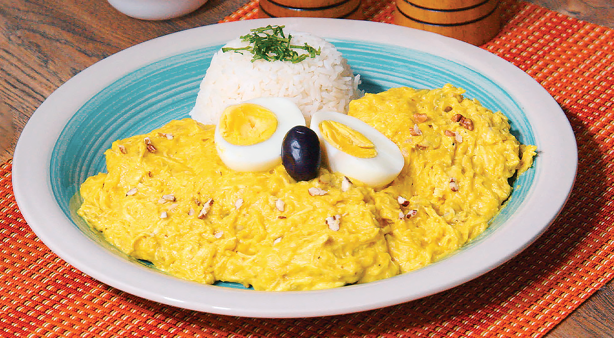

Aji de Gallina

Description
Ají de gallina is a classic Peruvian dish that combines shredded chicken with a rich, creamy sauce made from a blend of yellow ají peppers, bread, and milk. The sauce is smooth and slightly spicy, with a hint of nuttiness from the addition of ground walnuts or pecans, giving it a complex and comforting flavor. Traditionally served over white rice with boiled potatoes and black olives, this dish is a perfect example of Peru’s unique fusion of indigenous ingredients and European influences.
The vibrant yellow sauce gets its color and mild heat from ají amarillo, a key ingredient in Peruvian cuisine. Ají de gallina is often topped with slices of hard-boiled eggs, adding texture and a finishing touch to the dish. It’s a hearty, satisfying meal that balances creamy, savory, and spicy elements, making it a favorite in homes and restaurants across Peru.
Ingredients
For the chicken:
- 2 chicken breasts (skinless, boneless)
- 4 cups chicken broth (or water)
- 1 bay leaf
- Salt and pepper to taste
For the sauce:
- 2 tablespoons vegetable oil
- 1 large onion, finely chopped
- 3 cloves garlic, minced
- 3-4 ají amarillo peppers (seeds and veins removed, chopped) or 2 tablespoons ají amarillo paste
- 4 slices white bread (crust removed)
- 1 ½ cups evaporated milk
- ½ cup walnuts or pecans, ground
- ¼ cup grated Parmesan cheese
- ¼ teaspoon ground cumin
- ¼ teaspoon ground turmeric (optional, for extra color)
- Salt and pepper to taste
For serving:
- White rice
- Boiled potatoes (cut into slices)
- Hard-boiled eggs (sliced)
- Black olives (for garnish)
- Fresh parsley or cilantro (optional, for garnish)
Steps
- In a large pot, place the chicken breasts and cover with chicken broth (or water). Add a bay leaf and season with salt and pepper.
- Bring to a boil, then reduce the heat and simmer for about 15-20 minutes, or until the chicken is fully cooked.
- Remove the chicken from the pot, reserving the broth, and let it cool. Once cool, shred the chicken into thin strips and set aside.
- Soak the bread slices in 1 cup of the reserved chicken broth for about 5 minutes.
- In a blender, blend the soaked bread and evaporated milk until you get a smooth mixture. Set aside.
- In a large pan, heat the vegetable oil over medium heat. Add the chopped onion and sauté until softened and translucent, about 5 minutes.
- Add the minced garlic and ají amarillo (chopped or paste), and cook for another 3 minutes, stirring frequently.
- Stir in the ground walnuts (or pecans), cumin, and turmeric (if using). Cook for an additional minute.
- Pour the bread and milk mixture into the pan with the onions and ají, stirring constantly until the sauce begins to thicken, about 5-7 minutes.
- Add the shredded chicken and Parmesan cheese, mixing everything together until the chicken is coated in the creamy sauce.
- If the sauce is too thick, add a bit more reserved chicken broth to reach your desired consistency. Season with salt and pepper to taste.
- Serve the Ají de Gallina over a bed of white rice and alongside boiled potato slices.
- Garnish with slices of hard-boiled eggs, black olives, and fresh parsley or cilantro (optional).
Back to Home